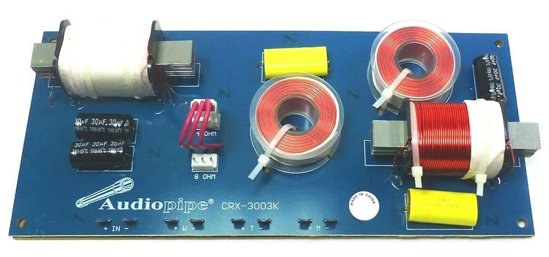
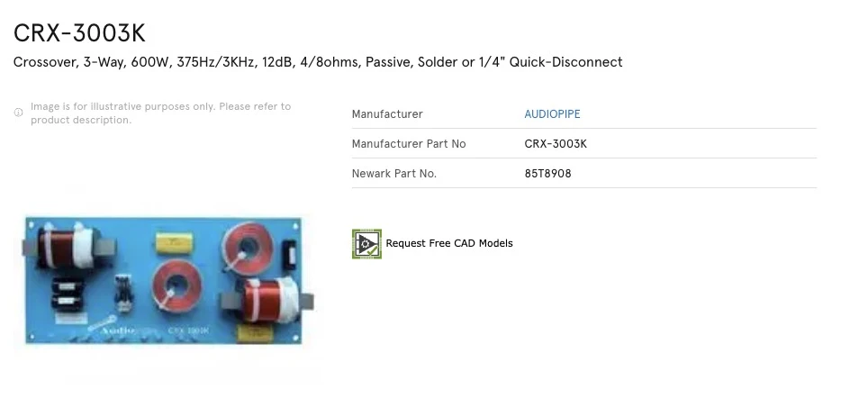
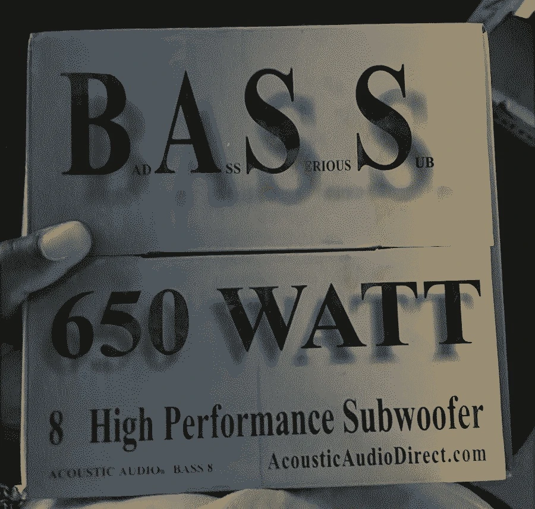
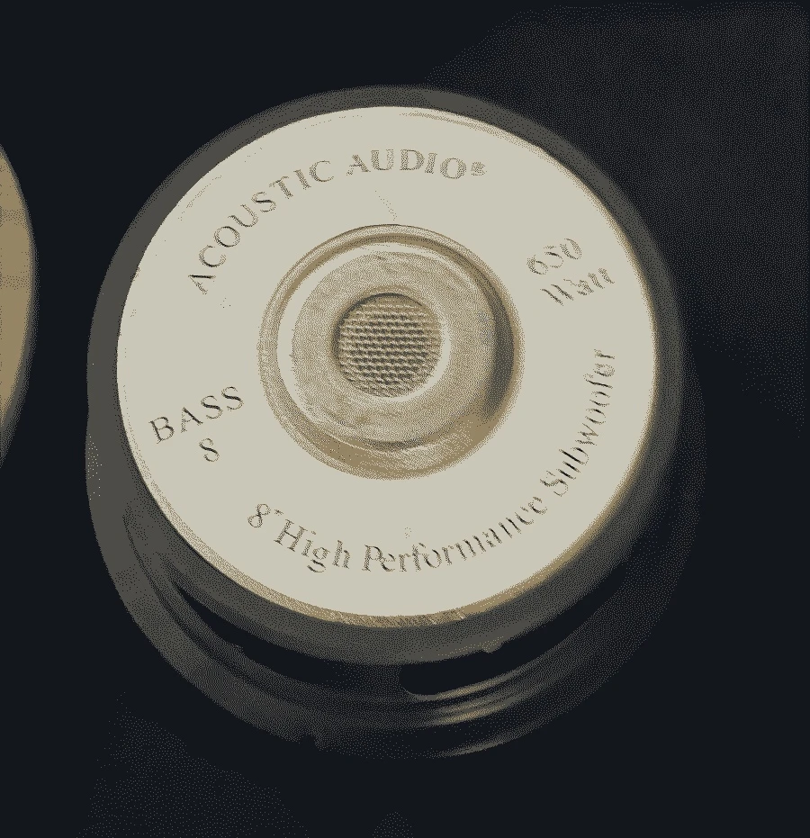

Building HiFi Speakers
The cloud speakers are done! This was a wild learning experience. I was super excited when the crossover came in to set it up. I did a lot of testing at 4ohms with the crossover around 290 for the bass and 2400 for the mid to tweeter, and at 8 ohms with the crossover for the bass around 300 and the tops around 3400. I decided to stick with running the speakers at 4 ohms. One of the immediate things i noticed was that there wasn't enough bass at all. This could be because the bass drivers I was using were 4 ohm, and the mid ones were 8 ohms and covering a wider range, but also because the mid drivers were open back and the subs were enclosed, so you're getting twice as loud of a sound coming out of the mid range drivers. I added two power resistors, whatever I had lying around in the studio to the back of the mid range drivers to make them about 10db quieter which helped but they still feel loud and I don't think ill get much out of these cheap 10in bass drivers, so I'm leaving it where it is for now, and maybe ill add another resistor in series to the back if its too mid heavy. That said, there is a lot of clarity in those mids, not so much in the highs, I wish i had used compression drivers or added a piezo or super tweeter to get up to 20khz, but this is the gonzo build. It just needed to happen and now its done. They sound great! I have a lot of ear fatigue from lots of listening so I'm going to take a break from them, listen to them in new spaces and ask for peoples opinions on ho they sound so I don't feel crazy.


The cloud speakers are almost complete! Today I ordered the crossover. When me and Matt did a sweep on the low, mid and high frequency drivers, we found that the mid range drivers roll off around 2400 hz. When doing the crossover manually with my modular synth I found it works well for the woofer driver around 300hz. I didn't really want to design the crossover from scratch so i went looking for one for similar specs for cheap, but could only find one with a crossover of 300hz and 3000hz. This means most likely there will be a drop between 2400/2800 hz and 3000hz, that im hoping isn't too drastic. I think it also rolls off on the bottom end around 100hz, which isnt ideal but its what i got for these. Tested them all today with separate amplifies and no crossover and it sounds pretty good! Wont know how flat it is until doing another full sweep after the crossover is wired up. The crossover I'm using is a cheaper copy of the Dayton audio XO3W-375/3K 3-Way Crossover. The one I'm using is the Audiopipe CRX-3003K. I have a feeling the super high frequencies are not really there yet too, maybe I will have to add some sort of super tweeter or piezo tweeter at the top, maybe with some simple tractrix horn. And the crossover matches the speakers in blue!



After doing some calculations and looking at the schematic of the crossover, It turns out my crossover points are actually shifting because of the ohm of my drivers. The tweeter driver is 6ohm, the midrange 8ohm and the woofer 4ohm. If I use the crossover in 8ohm mode, the low pass cutoff for the woofer becomes 425hz and the tweeter high pass becomes 3465hz, which is way too high for where my midrange driver rolls off. Instead I'll have to use it at 4ohms: the tweeter rolloff becomes 2400hz which is actually better for my midrange driver, and the woofer low pass becomes 212hz which is pretty low, but I believe the midrange driver can go that low or at least with only a little rolloff so I'm okay with that.
Right now I'm building these hifi open baffle hybrid speakers from sub drivers that Hoolihan dropped off at the studio, mid range Page drivers that were used at PA speakers in the ceilings at my studio probably in the offices that occupied the space in the 90s and early 2000s, and tweeters Eli harvested from some studio monitors. This is my first HiFi Build and I'm doing it right, trying to build a nice crossover and everything, I was quad amping it for a while, using my modular to make crossover filters before the amp. The page drivers are open baffle and the BASS (bad ass serious sub) drivers are in a closed box, with no port. Matt Azevedo is helping me do the calculations, I need a windows computer to run Hornresp and RoomEQWizard. And i need to order some more parts for the crossover, but I've harvested some power caps and inductors from old speaker cabinets in the basement of the Firehouse. I'm learning a lot about crossover design and speaker impedance. The page drivers had transformers on the back of them that made me think that they would be a super high impedance but they ended up just being 8ohms. I have been looking at a lot of Japan HiFi Audio listening rooms with crazy compression drivers for the whole system, connected to these insane sculptural horns that spiral the house into the attic to make the length of the horn for bass response and I want to build something like that for my architecture thesis.




